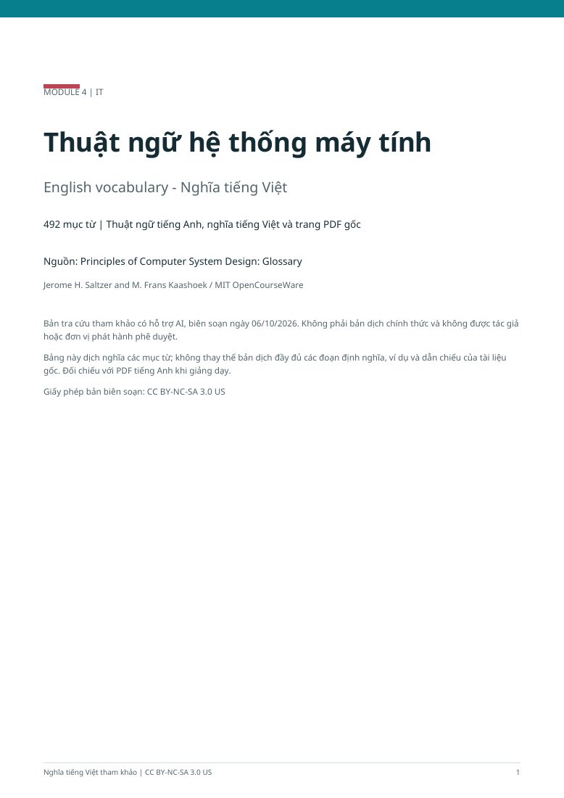

Thuật ngữ hệ thống máy tính
492 mục từ tiếng Anh kèm nghĩa tiếng Việt và số trang PDF gốc. Đây là bản tra cứu nghĩa ngắn gọn, không phải bản dịch toàn bộ định nghĩa.
Jerome H. Saltzer and M. Frans Kaashoek / MIT OpenCourseWare PDF · 23 pages · English - Vietnamese · 100 KB Source: MIT OpenCourseWare Bản biên soạn tham khảo có hỗ trợ AI; không phải bản dịch chính thức. Biên soạn ngày 06/10/2026. License: CC BY-NC-SA 3.0 US